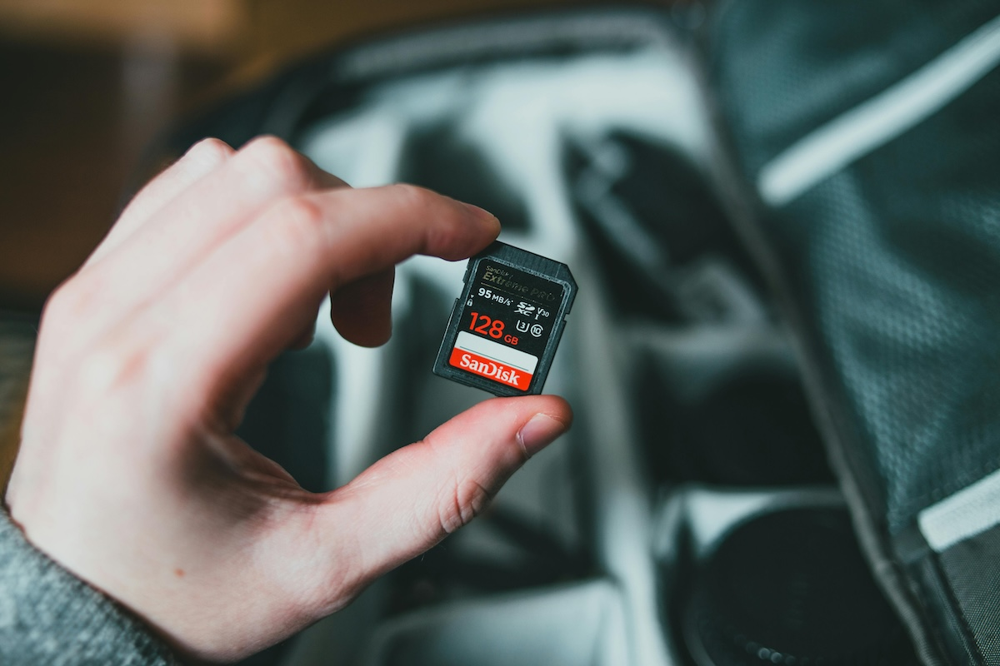

Fotoğraf Makineleri İçin Hafıza Kartları: Seçim Rehberi ve İpuçları
Fotoğrafçılık tutkunları için en önemli ekipmanlardan biri fotoğraf makinesidir; ancak bir diğer kritik bileşen de doğru hafıza kartını seçmektir. Hafıza kartları, çektiğiniz karelerin kalitesinden çekim hızınıza kadar birçok faktörü etkileyebilir. Bu yazıda, hafıza kartı seçiminde dikkat edilmesi gereken temel noktaları ve önerileri paylaşacağım.
Hafıza Kartı Türleri
Fotoğraf makineleri farklı kart türleriyle çalışabilir. İşte en yaygın olanlar:
- SD (Secure Digital) Kartlar: Günümüzde en çok kullanılan kart türüdür. Kompakt yapıları ve geniş kapasite seçenekleriyle çoğu DSLR ve aynasız fotoğraf makinesiyle uyumludur.
- CF (CompactFlash) Kartlar: Daha büyük ve dayanıklıdır. Genellikle profesyonel fotoğraf makinelerinde bulunur.
- XQD ve CFexpress Kartlar: Yüksek hızlı veri aktarımı sağlayan bu kartlar, yüksek çözünürlüklü fotoğraf ve 4K/8K video çeken profesyoneller için idealdir.
Kapasiteler ve Kullanım Alanları
Hafıza kartı kapasitesi, fotoğrafçılık tarzınıza göre değişebilir.
- 16-64 GB: Hobi fotoğrafçılar ve günlük çekimler için idealdir.
- 128-512 GB: Uzun süreli seyahatler veya yüksek çözünürlüklü fotoğraf çekimleri için yeterlidir.
- 1 TB ve Üzeri: Profesyonel fotoğrafçılar ve video içerik üreticileri için uygundur.
Hız Sınıfları ve Performans
Hafıza kartının yazma ve okuma hızı, fotoğrafçılık deneyiminizi büyük ölçüde etkiler.
- Hız Sınıfı (Speed Class): Minimum yazma hızını belirtir. Fotoğraf makineleri için genellikle Class 10 tercih edilir.
- UHS (Ultra High Speed): UHS-I ve UHS-II standartları, veri aktarım hızını artırır. UHS-II, hızlı seri çekimler ve yüksek çözünürlüklü videolar için uygundur.
- V Hız Sınıfı (Video Speed Class): 4K/8K video çekimleri için önemlidir. Örneğin, V30 kartlar 30 MB/sn hızında sürekli yazma sağlayabilir.
Doğru Hafıza Kartını Seçerken Dikkat Edilmesi Gerekenler
- Uyumluluk: Fotoğraf makinenizin desteklediği kart türlerini kontrol edin.
- Hız Gereksinimleri: Yüksek çözünürlüklü fotoğraflar ve videolar için daha hızlı kartlara yönelin.
- Marka Güvenilirliği: SanDisk, Lexar, Kingston gibi güvenilir markaları tercih edin.
- Sahte Ürünlere Dikkat: Özellikle çevrimiçi alışveriş yaparken, sahte hafıza kartlarına karşı dikkatli olun. Ürünü resmi mağazalardan temin edin.
- Yedekleme Planı: Daha küçük kapasiteli birden fazla kart taşımak, verilerinizi kaybetme riskini azaltabilir.
Hafıza Kartınızı Korumak İçin İpuçları
- Kartınızı aşırı sıcaktan ve nemden koruyun.
- Her kullanım öncesinde kartı formatlayarak performansı artırın.
- Fotoğraf çekimlerinizi düzenli olarak bilgisayarınıza yedekleyin.
- Fiziksel hasarlardan korumak için kart saklama kutuları kullanın.
Sonuç olarak, hafıza kartı seçimi, fotoğrafçılık ekipmanınızın verimliliği ve çekim kalitesini doğrudan etkileyen bir faktördür. Makinenizin gereksinimlerini ve kendi ihtiyaçlarınızı göz önünde bulundurarak doğru kartı seçmek, hem işinizi kolaylaştırır hem de çekimlerinizi daha keyifli hale getirir.